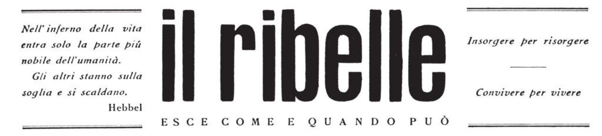

Costruire strumenti perché una storia arrivi a qualcuno: siti, mostre digitali, archivi, percorsi con gli studenti.
Quello che sto costruendo adesso, con le classi e con le associazioni.
con una classe quinta · i15martiri.daniloaprigliano.it
Percorso per le competenze trasversali che porta gli studenti a costruire un sito sulla strage del 10 agosto 1944 e sulla Resistenza milanese: ricerca sulle fonti dell’Archivio di Stato, schede biografiche dei quindici, timeline interattiva, mappa dei luoghi della memoria, podcast e interviste. La revisione storica è affidata a specialisti ed esperti della FIVL, la parte web la scrivono i ragazzi.
progetto FIVL · in corso, non ancora pubblicato
Progetto per gli ottantesimi anniversari della Liberazione, della Repubblica e della Costituzione, autorizzato dalla Struttura di missione per gli anniversari nazionali della Presidenza del Consiglio. Studenti delle superiori ricostruiscono le biografie di donne e uomini che dopo la Resistenza contribuirono a costruire la Repubblica, e ne fanno podcast. Le puntate non sono ancora in rete: l’indirizzo arriverà qui quando ci saranno.
Centro Studi Circolo Caldara · daniloaprigliano.github.io/maipiupiazzafontana
Giornata di studio per le scuole nel cinquantacinquesimo anniversario della strage, il 12 dicembre 2024, davanti a settanta studenti del Civico Polo «A. Manzoni»: ho costruito il programma, chiamato i relatori – lo storico Elia Rosati, il giurista Giuliano Turone, l’avvocato Federico Sinicato, il giornalista Alberto Nerazzini – e aperto i lavori. Il sito, che ho progettato e scritto, tiene insieme programma, relatori, video e materiali, ed è il punto a cui gli studenti tornano prima e dopo l’incontro.
Dal 2019, il lavoro sull’area web e didattica di una fondazione culturale.
area web e area editoriale
Ho costruito e curato le pagine della Scuola di Cittadinanza Europea, la piattaforma didattica della Fondazione: sei percorsi per le scuole (il Novecento e la stagione dei diritti, il fascismo, cittadinanza attiva e questione femminile, verità e fake news, scienza, città sostenibili), ciascuno con kit per i docenti e contenuti multimediali. Poi il lavoro editoriale: newsletter, longform, speciali digitali e le pagine che tengono insieme le iniziative, fra cui lo speciale elettorale «Via col Voto».
allestimento digitale · risorsedigitali.fondazionefeltrinelli.it
Cinque mostre portate dalle sale allo schermo, con il webmaster della Fondazione: Il Che vive!, La Polonia di Solidarność, Una storia europea chiamata Rivoluzione, La nuova frontiera americana, Cile 1973. Ho costruito le pagine nel sistema editoriale, scritto i testi che introducono le fotogallery, verificato le didascalie sul catalogo d’archivio, scelto i materiali e i quattro approfondimenti di ogni pannello, montato le cronologie e fissato i criteri redazionali perché le cinque mostre parlassero la stessa lingua. La curatela scientifica è di altri: mio è il modo in cui la mostra arriva a chi la visita da casa.
I lavori più antichi, e quelli che tengo in piedi da più tempo.
mostra · cura scientifica di Antonino De Francesco, Università degli Studi di Milano · ciclo «Milano è Memoria» del Comune di Milano · la scheda della Statale
Contributo all’impianto narrativo, redazione dei testi e curatela dell’allestimento: la mostra l’hanno costruita gli studenti del master in Public History della Statale e della Fondazione Feltrinelli, il mio, sotto la direzione di De Francesco. Un centenario scomodo. È stata esposta nella corte del Commissariato di Piazza San Sepolcro, dove i Fasci nacquero, e poi a Palazzo Marino: due luoghi che raccontano da soli perché la memoria pubblica di quella data vada maneggiata con cura e non lasciata a chi la vorrebbe celebrare.
sito e storia digitale · fiammeverdibrescia.it
Il sito ufficiale delle formazioni partigiane cattoliche lombarde: struttura narrativa, organizzazione dei contenuti e testi principali sono miei, sotto la supervisione storica di Rolando Anni e Roberto Tagliani. È il lavoro da cui è nata la mia ricerca sulla Resistenza autonoma, poi confluita nel saggio per Marsilio, e lo tengo in piedi dal 2014: per un’associazione di reduci e di famiglie, un archivio online che smette di funzionare è memoria che si perde due volte.

digitalizzazione e divulgazione · il-ribelle.it
Ideazione, progettazione e sviluppo del sito che rende leggibile «il ribelle», il giornale clandestino delle Fiamme Verdi stampato sotto l’occupazione: le edizioni originali, i materiali di approfondimento e le schede didattiche per la scuola secondaria. Una fonte primaria che stava in pochi archivi, messa in mano a chiunque abbia una connessione – e a un insegnante che voglia far leggere ai suoi studenti che cosa si scriveva rischiando la vita.
Questi lavori si vedono anche da altre angolazioni: i siti stanno tutti nella pagina Web, con gli indirizzi; il capitolo Marsilio nato dall’archivio delle Fiamme Verdi sta in Scrittura; le associazioni per cui li ho fatti – il Caldara, la FIVL, «Hey Milano» – stanno in Impegno civile; i percorsi con le classi stanno in IA a scuola. L’elenco completo, in ordine di tempo, è in Tutto; con le date e i numeri, nel curriculum.